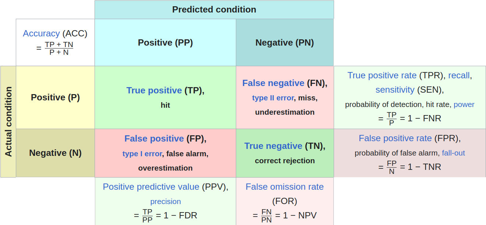
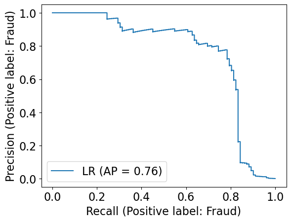
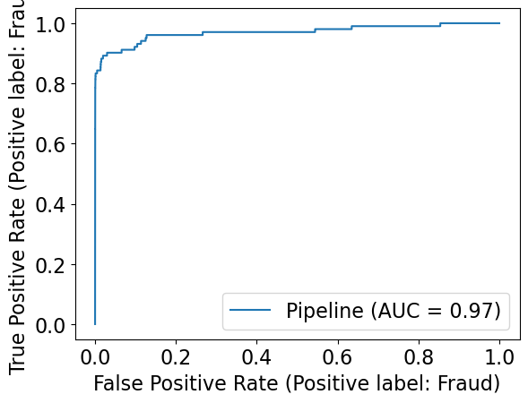
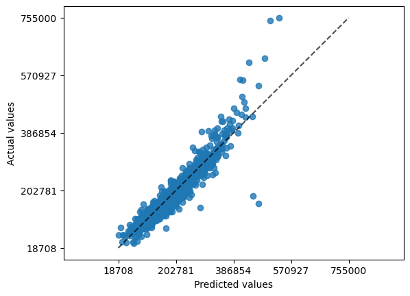
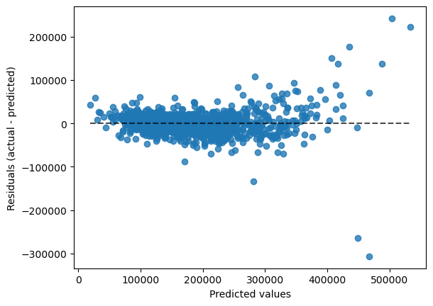
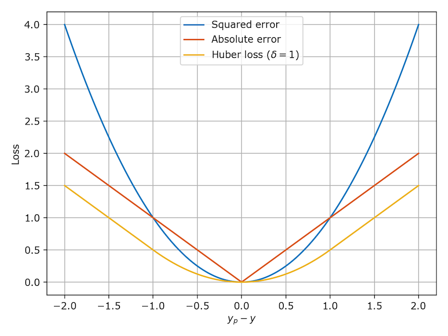
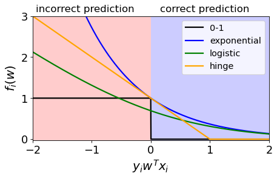

Model Selection
Classification Metrics
- Need to evaluate the performance of a classifier not just by accuracy
Logistic Regression
- Linear regression with sigmoid function
- Hyperparameter:
C(default 1.0)- Lower C => more regularization => smaller coefficients => underfitting
from sklearn.linear_model import LogisticRegression
pipe_lr = make_pipeline(preprocessor, LogisticRegression())
pd.DataFrame(cross_validate(pipe_lr, X_train, y_train, cv=10, return_train_score=True))Confusion Matrix

- Choose the positive case based on which class is more important to us or which class is rare
- spotting a class (e.g. fraud/ spam/ disease detection)
- Can do this in python:
from sklearn.metrics import confusion_matrix
from sklearn.model_selection import cross_val_predict
# gets values without plot
confusion_matrix(y_train, cross_val_predict(pipe_lr, X_train, y_train, cv=5))
# get values with plot
from sklearn.metrics import ConfusionMatrixDisplay
ConfusionMatrixDisplay.from_estimator(pipe_lr, X_train, y_train, display_labels=['Not Fraud', 'Fraud']);Output of confusion matrix by default:
| Predicted F [0]| Predicted T [1]
Actual F [0] | TN | FP
Actual T [1] | FN | TPValues
- Precision \[precision = \frac{TP}{PP} = \frac{TP}{TP + FP}\]
- Recall or True positive rate (TPR) \[recall = \frac{TP}{P} = \frac{TP}{TP + FN}\]
- f1-score \[f1 = 2 \cdot \frac{precision * recall}{precision + recall} = 2 \frac{1}{\frac{1}{precision} + \frac{1}{recall}}\]
Classification Report
from sklearn.metrics import classification_report
print(classification_report(y_train, cross_val_predict(pipe_lr, X_train, y_train, cv=5)))
# output
# precision recall f1-score support
# Fraud 0.89 0.63 0.74 102
# Non fraud 1.00 1.00 1.00 59708
# accuracy 1.00 59810
# macro avg 0.94 0.81 0.87 59810
# weighted avg 1.00 1.00 1.00 59810Precision Recall curve
- tradeoff between precision and recall
- setting a threshold is called setting the operating point
- Changing the threshold of the classifier (default of logistic regression is 0.5)
- remember
predict_probareturns the probability of the positive class, if higher than threshold, then positive class - as threshold increases, higher bar => precision increases and recall decreases (less FP but less TP)
- as threshold decreases, lower bar => precision decreases and recall increases (more TP but more FP)
- remember
Plotting Precision Recall Curve
from sklearn.metrics import PrecisionRecallDisplay
PrecisionRecallDisplay.from_estimator(
pipe_lr,
X_valid,
y_valid,
pos_label='Fraud',
name='LR', # For Logistic Regression
);
- Want the curve to be as close to the top right corner as possible (100% precision and 100% recall)
- Threshold of 0 in bottom left => All points are predicted to be positive => 100% recall and 0% precision
- Threshold of 1 in top right => All points are predicted to be negative => 0% recall and 100% precision
Or if want just the values:
from sklearn.metrics import precision_recall_curve
pd.DataFrame(
precision_recall_curve(
y_valid,
pipe_lr.predict_proba(X_valid)[:, fraud_column],
pos_label='Fraud',
),
index=['precision', 'recall', 'threshold']
).TAP (Average Precision) score
- Area under the precision recall curve
- Higher is better (0 is worst, 1 is best)
- Also supports multi-class using one-vs-rest approach + averaging
- IMPORTANT:
- F1 score is for a given threshold and measures the quality of predict.
- AP score is a summary across thresholds and measures the quality of predict_proba.
from sklearn.metrics import average_precision_score
ap_lr = average_precision_score(y_valid, pipe_lr.predict_proba(X_valid)[:, fraud_column], pos_label='Fraud')| AP score | f1 score |
|---|---|
measures quality of predict_proba |
measures quality of predict |
- These two metrics do not always agree*
ROC Curve
- Receiver Operating Characteristic: plots the true positive rate (recall) against the false positive rate (1 - specificity)
- Instead of plotting precision against recall, plots recall (TPR) against FPR
\[FPR = \frac{FP}{N} = \frac{FP}{FP + TN}\]
from sklearn.metrics import RocCurveDisplay
RocCurveDisplay.from_estimator(
pipe_lr,
X_valid,
y_valid,
pos_label='Fraud'
);
- Ideal is top left corner (100% TPR and 0% FPR)
- Lower left (Threshold of 1) => 0% TPR and 0% FPR
- Upper right (Threshold of 0) => 100% TPR and 100% FPR
AUC (Area Under the Curve)
Area under the ROC curve
AUC is the probability that a randomly chosen positive point has a higher score than a randomly chosen negative point
- AUC of 1.0: all positive points have a higher score than all negative points.
- AUC of 0.5: means random chance.
Class Imbalance
- If we balance the classes:
- Precision goes down, FP goes up
- Recall goes up, FN goes down
- F1 score goes down
- AP score goes down
- AUC score goes down
- generally reduce accuracy
Solutions to Class Imbalance
- Class weights: penalize the minority class more
LogisticRegression(
max_iter=500,
# give more importance to "Fraud" class (10x)
class_weight={'Non fraud': 1, 'Fraud': 10}
# class_weight='balanced' => automatically give more importance to minority class
)Regression Metrics
Model Building
Dummy Regressor
from sklearn.dummy import DummyRegressor
dummy = DummyRegressor(strategy='mean') # default
pd.DataFrame(cross_validate(dummy, X_train, y_train, cv=10, return_train_score=True))Ridge
- Linear regression with L2 regularization
- Hyperparameter:
alpha(default 1.0)- Higher alpha => more regularization => smaller coefficients => underfitting
- more regularization : smaller coefficients => less sensitive to changes in the input features => less likely to overfit
from sklearn.linear_model import Ridge
lr_pipe = make_pipeline(preprocessor, Ridge())
pd.DataFrame(cross_validate(lr_pipe, X_train, y_train, cv=10, return_train_score=True))
# fit model
lr_pipe.fit(X_train, y_train)
# get coefficients
df = pd.DataFrame(
data={"coefficients": lr_pipe.named_steps["ridge"].coef_}, index=feature_names)
df.sort_values("coefficients", ascending=False)RidgeCV
- Ridge with cross-validation to find the best alpha
from sklearn.linear_model import RidgeCV
alphas = 10.0 ** np.arange(-6, 6, 1)
ridgecv_pipe = make_pipeline(preprocessor,
RidgeCV(alphas=alphas, cv=10))
ridgecv_pipe.fit(X_train, y_train);
# best alpha
best_alpha = ridgecv_pipe.named_steps["ridgecv"].alpha_Scoring Regression Models
- Cannot use equality since we are predicting a continuous variable (not classification)
Scoring Methods in Regression Models
| Metric | Description | Formula | Min Value | Max Value | Code Example (sklearn) |
|---|---|---|---|---|---|
| MSE (Mean Squared Error) | Measures the average of the squares of the errors, i.e., the average squared difference between the estimated values and the actual value. | \[MSE = \frac{1}{n}\sum_{i=1}^{n}(Y_i - \hat{Y}_i)^2\] | 0 (perfect) | ∞ | from sklearn.metrics import mean_squared_error mse = mean_squared_error(y_true, y_pred) |
| RMSE (Root Mean Squared Error) | Square root of the MSE. It measures the standard deviation of the prediction errors or residuals. | \[RMSE = \sqrt{MSE}\] | 0 (perfect) | ∞ | rmse = mean_squared_error(y_true, y_pred, squared=False) |
| MAE (Mean Absolute Error) | Measures the average of the absolute errors. | \[MAE = \frac{1}{n}\sum_{i=1}^{n}\left\| Y_i - \hat{Y}_i \right\| \] | 0 (perfect) | ∞ | from sklearn.metrics import mean_absolute_error mae = mean_absolute_error(y_true, y_pred) |
| MAPE (Mean Absolute Percentage Error) | Measures the average of the absolute percentage errors. | \[MAPE = \frac{1}{n}\sum_{i=1}^{n}\left\| \frac{Y_i - \hat{Y}_i}{Y_i} \right\| \times 100\% \] | 0 % (perfect) | ∞ % | from sklearn.metrics import mean_absolute_percentage_error mape = mean_absolute_percentage_error(y_true, y_pred) |
| R² (Coefficient of Determination) | Measures how well future samples are likely to be predicted by the model. | \[R^2 = 1 - \frac{\sum_{i=1}^{n}(Y_i - \hat{Y}_i)^2}{\sum_{i=1}^{n}(Y_i - \bar{Y})^2}\] | -ve [if worst than mean] | 1 (perfect) | from sklearn.metrics import r2_score r2 = r2_score(y_true, y_pred) |
- MAE is less sensitive to outliers than MSE
Inspecting error
- Can plot the actual vs predicted values to see the error (and plot line of gradient 1 = perfect prediction)
from sklearn.metrics import PredictionErrorDisplay
PredictionErrorDisplay.from_estimator(
ridge_tuned,
X_train,
y_train,
kind='actual_vs_predicted',
subsample=None # show all predictions
)
- Can plot the residuals (error) vs predicted values to see if there is a pattern (e.g. heteroscedasticity)
from sklearn.metrics import PredictionErrorDisplay
PredictionErrorDisplay.from_estimator(
ridge_tuned,
X_train,
y_train,
subsample=None # show all predictions
)
Data Cleaning
Need to have good data to build a good model.
Bad quality data:
- Missing values
- Few observations overall or in a specific group
- Biased sample (not representative of the population)
- Non-independent observations
- Inaccurate measurements
- Fabricated data
- Out of bounds values
- Obsure column names
- Typos (spelling differences in categorical variables)
- Using multiple values to represent same thing (e.g. NA, NONE, NULL, NaN)
- Incorrect data types
Importance of Features
Better features help more than a better model.
Good features would ideally:
- capture the most important information
- allow learning with few examples
- generalize to new scenarios
Trade-off for simple and expressive features:
- simple features: overfitting risk is low but low score
- expressive features: overfitting risk is high but high score
Feature Preprocessing vs. Feature Engineering
| Preprocessing | Engineering |
|---|---|
| step of cleaning and preparing the data for analysis | creating new features from existing data |
| generally HAVE to do, or error | optional but can improve model performance |
| e.g. scaling, normalization, imputation | e.g. one-hot encoding, binning, get more data, group-wise normalization, transformation |
- Feature Selection: removing irrelevant features, normally done after feature engineering
Feature Engineering
Common guidelines:
- Is not unique or random
- Has a variance (not constant)
- Adds unique variance (is not constant transformation)
- changing units (e.g. from meters to feet) is not feature engineering
- Is ideally interpretable
Examples:
- Looking up and getting additional data
- Discretization (binning): e.g. age -> age group
- Group-wise normalization: express feature relative to group mean/median
- Transformation: e.g. height, weight -> BMI
Polynomial Feature Transformation
- parameter: degree
- higher degree: more expressive features => more overfitting
- Try to capture non-linear relationships
- Linear regression can only capture lines, planes, hyperplanes
- e.g. add a squared feature (feat1^2)
sklearn: PolynomialFeature
- Do polynomial then StandardScaler
- avoids polynomials being very large
from sklearn.preprocessing import PolynomialFeatures
poly = PolynomialFeatures(degree=2)
# degree: max degree of polynomial features
X_enc = poly_feats.fit_transform(X_toy)
pd.DataFrame(X_enc, columns=poly_feats.get_feature_names_out()).head()Degree example:
| Dimension | Degree | Examples |
|---|---|---|
| 1 | 2 | 1, x, x^2 |
| 2 | 2 | 1, x, y, x^2, xy, y^2 |
Matrix Notation for Linear Regression
\[ \hat{y} = Xw \]
- X: design matrix (n x d)
- w: weights (d x 1)
- y: target (n x 1)
For polynomial features:
\(Z = [1, x, x^2]\)
\[ \hat{y} = Zw = \begin{bmatrix} 1 & x_1 & x_1^2 \\ 1 & x_2 & x_2^2 \\ \vdots & \vdots & \vdots \\ 1 & x_n & x_n^2 \end{bmatrix} \begin{bmatrix} w_0 \\ w_1 \\ w_2 \end{bmatrix} = \begin{bmatrix} w_0 + w_1x_1 + w_2x_1^2 \\ w_0 + w_1x_2 + w_2x_2^2 \\ \vdots \\ w_0 + w_1x_n + w_2x_n^2 \end{bmatrix} \]
Kernel Trick
- Polynomial features can be expensive to compute
- Kernel trick: compute dot product between two vectors in a higher dimensional space without computing the transformation explicitly
Feature Importance
Feature Correlation
import seaborn as sns
sns.heatmap(df.corr(), annot=True)- Shows correlation between features
- Extremely simplistic:
- Only looks at linear correlation
- Only looks at pairwise correlation (isolates features)
Coefficients in Linear Models
- Correlation among features might make coefficients completely uninterpretable.
- Fairly straightforward to interpret coefficients of ordinal features.
- In categorical features, it’s often helpful to consider one category as a reference point and think about relative importance.
- For numeric features, relative importance is meaningful after scaling.
- You have to be careful about the scale of the feature when interpreting the coefficients.
- Remember that explaining the model explaining the data or explaining how the world works.
- The coefficients tell us only about the model and they might not accurately reflect the data.
Feature Selection
- More features => more complex model => overfitting
- Feature selection find features that are important for prediction and remove the rest.
Why?
- Interpretability: easier to explain with fewer features
- Computation: faster to train simpler models (curse of dimensionality)
- Data collection: cheaper to collect fewer features
- Storage: less space to store fewer features
- Fundamental Tradeoff: reduce overfitting by reducing complexity
How?
- domain knowledge
- automatic feature selection
- model-based selection
- recursive feature elimination
- forward/backward selection
Intrinsic Feature Selection
- Fast and easy
- Arbitrary, does not take into account feature combinations
- e.g. correlation threshold, variance threshold
Model-Based Feature Selection
- Use a supervised model to judge the importance of each feature, and keep only the most important ones.
- Can use different model than the final estimator.
- Use a model that provides some measure of feature importance. (e.g. decision trees, linear models, etc.)
General Steps:
- Select a threshold for which features to keep.
- Discard features below the threshold.
from sklearn.feature_selection import SelectFromModel
select_lr = SelectFromModel(Ridge(), threshold="median")
# Add feature selection to pipeline (after preprocessing)
pipe = make_pipeline(preprocessor, select_lr, Ridge())
# access selected features
pipe.named_steps["selectfrommodel"]
# can do: .n_features_in_, .threshold_, .get_support()Recursive Feature Elimination (RFE)
- Recursively remove features, build a model on those features that remain, and then repeatedly construct a model and remove the weakest feature until a specified number of features remain.
- Iteratively eliminates unimportant features.
- Computationally expensive
RFE Algorithm
- Decide the number of features to select.
- Assign importances to features, e.g. by fitting a model and looking at
coef_(Linear models) orfeature_importances_(RandomForestClassifier). - Remove the least important feature.
- Repeat steps 2-3 until only \(k\) features are remaining.
from sklearn.feature_selection import RFE
rfe = RFE(Ridge(), n_features_to_select=120)
pipe_rf_rfe = make_pipeline(preprocessor, rfe, RandomForestRegressor(random_state=42))
results["rfe + rfe"] = mean_std_cross_val_scores(
pipe_rf_rfe, X_train, y_train, return_train_score=True
)Note: for categorical features, RFE might remove some OHE features. This is an unresolved issue.
RFECV
- RFE but using CV to find the optimal number of features to keep.
- very slow since there is CV within CV.
from sklearn.feature_selection import RFECV
rfecv = RFECV(Ridge())
pipe_rf_rfecv = make_pipeline(
preprocessor, rfecv, RandomForestRegressor(random_state=42)
)
pipe_rf_rfecv.fit(X_train, y_train);
# optimal number of features
pipe_rfe_ridgecv.named_steps["rfecv"].n_features_
# which features were selected
pipe_rfe_ridgecv.named_steps["rfecv"].support_Search and Score Methods (Forward/Backward Selection)
Not based on feature importance.
Define a scoring function \(f(S)\) that measures the quality of a subset of features \(S\).
Search through all possible subsets of features and pick the subset with the best score.
- e.g. for A, B, C search through {}, {A}, {B}, {C}, {A, B}, {A, C}, {B, C}, {A, B, C}…
- # subsets = \(2^p\) where \(p\) is the number of features
Forward selection: start with no features and add one at a time.
- add the feature that results in the best score.
Backward selection: start with all features and remove one at a time.
- remove the feature that results in the best score.
from sklearn.feature_selection import SequentialFeatureSelector
pipe_forward = make_pipeline(
preprocessor,
SequentialFeatureSelector(Ridge(), direction="forward"),
RandomForestRegressor(random_state=42),
)
# results['rf_forward_fs'] = mean_std_cross_val_scores(pipe_forward, X_train, y_train, return_train_score=True)
pipe_forward.fit(X_train, y_train)Warnings about Feature Selection
- A feature relevance is only defines in the context of other features.
- Adding/removing features can change the importance of other features.
- Relevance != causality
- The methods don’t always work.
Loss Function
- A function that measures how well a model fits the data
- The goal is to minimize the loss function
- smaller loss \(\rightarrow\) better model
- Captures what is important to minimize
- Common loss functions:
- Least squares loss
- Absolute error loss
- Huber loss

Scoring Metric vs Loss Function
| Scoring Metric | Loss Function |
|---|---|
| Report the results (often several metrics) | Used to train/ fit the model |
| Find best model hyperparams | Find best model parameters |
| Can pick those suitable for the task | Constrainted (need to be differentiable) |
Regression Loss Functions
Ordinary Least Squares (OLS) Loss
\[J(\omega) = \sum_{i=1}^{n} (y_i - \omega^T x_i)^2 \]
- Define loss as sum of squared errors (difference between prediction and actual value)
- Penalizes heavily for large errors
- sensitive to outliers
- For a well-defined OLS, there is a unique solution (not always the case)
- \(\omega = (X^T X)^{-1} X^T y\)
- \(X^T X\) must be invertible
- \(\omega = (X^T X)^{-1} X^T y\)
Absolute Value Loss (L1 Loss/ Robust Regression)
\[J(\omega) = \sum_{i=1}^{n} |y_i - \omega^T x_i| \]
- Less sensitive to outliers
- But minimization is harder
- not differentiable at 0
- no closed form solution
- Alternative: Huber Loss
- behaves like OLS for small errors
Classification Loss Functions
\[ y_i w^T x_i = \begin{cases} \text{correct} & y_i w^T x_i > 0 \\ \text{incorrect} & y_i w^T x_i < 0 \end{cases} \]
- \(y_i\): positive
- correct: \(w^T x_i > 0 \rightarrow y_i w^T x_i > 0\)
- incorrect: \(w^T x_i < 0 \rightarrow y_i w^T x_i < 0\)
- \(y_i\): negative
- correct: \(w^T x_i < 0 \rightarrow y_i w^T x_i > 0\)
- incorrect: \(w^T x_i > 0 \rightarrow y_i w^T x_i < 0\)
Different Loss Functions

| 0-1 Loss | Exponential Loss | Hinge Loss | Logistic Loss | |
|---|---|---|---|---|
| description | Only cares about whether the prediction is correct or not | Punishes the wrong predictions exponentially, value gets smaller as more confident for correct predictions | - Confident and correct predictions are not penalized - Grows linearly for incorrect predictions |
- Used in logistic regression - Smooths the degenerate 0-1 loss with log-sum-exp |
| function | \[\mathbb{1}\{y \neq w^T x\}\] | \[e^{-y w^T x}\] | \[\max(0, 1 - y w^T x)\] | \[\log(1 + e^{-y w^T x})\] |
| loss | - when incorrect, loss is 1 - when correct, loss is 0 - Total loss is the sum of all losses (number of incorrect predictions) |
- when incorrect, loss is large - when correct, loss is small |
- if correct \(y w^T x > 1\), \(1-y w^T x <0\) - if incorrect \(y w^T x < 1\), \(1-y w^T x >0\) |
- Convex, differentiable, and smooth |
- Hinge loss + L2 regularization = SVM
Sigmoid vs Logistic Loss
Let \(z = y_i w^T x_i\)
- Sigmoid loss: \(\sigma(z) = \frac{1}{1 + e^{-z}}\)
- maps to [0, 1] (probability)
- for
predict_proba
- Logistic loss: \(\log(1 + e^{-z})\)
- maps \(y_i w^T x_i\) to \([0, \infty]\) = loss contribution for a single example
- important for
fit
Sklearn Logistic Regression
from sklearn.linear_model import LogisticRegression
model = LogisticRegression()
model.fit(X_train, y_train)
model.predict(X_test)
model.predict_proba(X_test)- hyperparameters:
C: inverse of regularization strength- smaller
C\(\rightarrow\) stronger regularization \(\rightarrow\) smaller weights \(\rightarrow\) simpler model \(\rightarrow\) underfitting
- smaller
Final Cost Function
\[J(w) = \text{loss} + \lambda \cdot \text{regularization} \]
- more complex model => higher regularization => higher cost
Regularization
- adding penalty on model complexity (to reduce overfitting)
- Benefits:
- reduce overfitting
- less prone to outliers
- Key Idea: Pick the line/ hyperplane with the smalles slope (simplest model)
| L0 Norm | L1 Norm | L2 Norm |
|---|---|---|
| Number of non-zero elements | Sum of absolute values | Square root of the sum of squared values |
| \(\|\|w\|\|_0\) | \(\|\|w\|\|_1\) | \(\|\|w\|\|_2\) |
| N/A | \(\sum_{i=1}^{n} \|x_i\|\) | \(\sqrt{\sum_{i=1}^{n} x_i^2}\) |
L0 Regularization
\[J(\omega) = ||X\omega - y||_2^2 + \lambda ||\omega||_0\]
- Where \(||\omega||_0\) is the L0-norm: number of non-zero elements in \(\omega\)
- To increase the degrees of freedom by 1, need to decrease the error by \(\lambda\)
- degrees of freedom: number of parameters in the model
- smaller DOF is preferred
- Hard to optimize since it is non-convex and non-differentiable
L2 Regularization
\[J(\omega) = ||X\omega - y||_2^2 + \lambda ||\omega||_2^2\]
- Where \(||\omega||_2^2\) is the L2-norm: sum of squared values of \(\omega\)
- Weights decrease, but DO NOT become zero
- Big \(\lambda\) => more regularization => lower weights => simpler model => underfitting
- \(\lambda=0\) same as OLS
- As \(\lambda\) increases (simpler model):
- \(||X\omega - y||_2^2\) increases (less accurate)
- \(||\omega||_2^2\) decreases (smaller weights)
Picking \(\lambda\)
- Theory: As n grows, \(\lambda\) should be in the range of \([0,\sqrt{n}]\)
- Do this by optimizing validation error or CV error
Sklearn: Ridge Regression
from sklearn.linear_model import Ridge
ridge = Ridge(alpha=1.0) # alpha is lambda
ridge.fit(X_train, y_train)L1 Regularization
\[J(\omega) = ||X\omega - y||_2^2 + \lambda ||\omega||_1\]
- Similar to L2 but uses L1-norm instead.
- both shrink weights and result in simpler models
- Weights can become zero
- some features are completely ignored
- kinda like feature selection
Terminology
- sparsity: linear function with many zero-valued coefficients
- L0 and L1 regularization => sparse models
Sklearn: Lasso Regression
from sklearn.linear_model import Lasso
lasso = Lasso(alpha=1.0) # alpha is lambda
lasso.fit(X_train, y_train)Regularization and scaling
- Scaling does not matter:
- Decision trees/ Naive Bayes/ Random Forests: only look at 1 feature at a time
- Least Squares Loss: just change weights
- Scaling matters:
- KNN: distance will be affected by large values
- Regularized Least Squares: regularization term will be affected by large values
Regularization and collinearity
- L2 regularization: only 1 unique solution
- e.g. 3 collinear features => all equal weights (1/3)
- L1 regularization: many solutions
- e.g. 3 collinear features => (1,0,0), (0,1,0), (0,0,1), (1/2,1/2,0), etc.
Sklearn: Elastic Net
\[J(\omega) = ||X\omega - y||_2^2 + \lambda(\alpha ||\omega||_1 + (1-\alpha)||\omega||_2^2)\]
- \(\lambda\) is the regularization parameter
- \(\alpha\) promotes:
- sparcity in L1
- smoothness in L2
- Function is strictly convex, so there is a unique solution (no collinearity problem)
from sklearn.linear_model import ElasticNet
elastic_net = ElasticNet(alpha=1.0, l1_ratio=0.5) # alpha is lambda, l1_ratio is alpha
elastic_net.fit(X_train, y_train)Ensemble Methods
Key Idea: Groups make better decisions than individuals, especially when the group members are diverse.
Tree-based is the most successful ensemble method
- Random Forest
- Gradient Boosted Trees
Ways to combine models:
- Averaging
- Stacking
Diversity
- Does not make the individual models better but adds diversity => better ensemble
- Think of it visually as high variance (not precise) and low bias (accurate on average)
- ((insert image from slides))
| RF | Boosting |
|---|---|
| Many independent trees | Trees are dependent on each other |
| random diversity | non-random diversity |
| can be parallelized | sequential |
Bagging
- Train each model on a different subset of the data
- Bootstrap Aggregation: Sampling with replacement.
Random Forest
Bagging + Random set of features at each node.
Deep trees, normally full depth.
General Idea:
- Single tree is likely to overfit
- Use a collection of diverse trees
- Each tree overfits on some part of the data but reduce overfitting by averaging
At each node:
- randomly select a subset of features (independednt from each node)
- find best split among the subset of features
- grow tree to full depth
Prediction:
- Vote the trees
Sklearn RandomForestClassifier
- uses soft prediction (avg predict_proba)
- easy to fit in parallel (each tree is independent)
- Some important hyperparameters:
n_estimators: number of trees (higher = more complex)max_depth: max depth of each tree (higher = more complex)max_features: max number of features to consider at each split (higher = more complex)- Defaults:
- Classification: sqrt(# features)
- Regression: # features / 3 or # features
- Defaults:
max_featuresandn_estimatorsget better scores as values increase but more computationally expensive- different from standard “hyperparameter tuning”
Extremely Randomized Trees
- Random Forest + Random Thresholds (instead of the best threshold)
- Individually, each tree is not that good
- Each tree is grown to full depth
- In sklearn:
ExtraTreesClassifier - ((insert image about the variance comparison))
AdaBoost (Adaptive Boosting)
- Boost performance through reweighting of data
- Fit initial model on training data
- reweight the training data so that samples that the initial model got wrong became more important
- Fit the next model on the reweighted data
- will prioritize the samples that the previous model performed poorly on
- Repeat until you have a set of models
- Combine the models into a single model
Gradient Boosted Trees
- better than AdaBoost
- Key Idea: Trying to decrease the residuals of the previous model by creating new tree that can predict the residuals (then use it as correction)
- No randomization
- combine multiple shallow (depth 1-5) trees
- built sequentially
- Was computationally expensive but now it is not:
- XGBoost, LightGBM, CatBoost
- Construct a base tree (root node), no splits
- Build next tree based on errors of previous tree
- the errors are the residuals
- Combine the tree from step 1 with the tree from step 2
- Repeat until max number of estimators is reached
- Combine the trees into a single model
from xgboost import XGBClassifier
from catboost import CatBoostClassifier
from lightbgm.sklearn import LGBMClassifier- Important Hyperparameters:
n_estimators: number of boosting rounds (higher = more complex)learning_rate: controls how strongly each tree tries to correct the mistakes of the previous trees (higher = more corrections = more complex)max_depth: max depth of each tree (higher = more complex)scale_pos_weight: balancing of positive and negative weights
Combining Models
Averaging
- Take vote of all models
Sklearn VotingClassifier
voting='soft'usespredict_probaand averages the probabilities- good if trust
predict_proba
- good if trust
voting='hard'usespredictand takes the majority vote
from sklearn.ensemble import VotingClassifier
averaging_model = VotingClassifier(
list(classifiers.items()), voting="soft"
) # need the list() here for cross-validation to work!Stacking
- Key idea: Weighted voting via simple model
- use outputs as inputs to a new model
- Use a simpler model like logistic regression as “meta-model”
- Each model is a feature for the meta-model
Important to model != Important to the real world
Model Interpretability
- Looking at feature importance can help us understand the model
- Why?
- Debugging: find systematic errors
- Diagnosing bias: find underlying biases
- Feature engineering: find new features
- Feature selection: find unimportant features
- Model interpretability can be leveraged by domain experts to diagnose systematic errors and underlying biases of complex ML systems.
Tree-based feature importance
- Key idea: How much does each feature contribute to the model?
- Use a tree-based model (e.g. random forest) to measure feature importance
- Do not use single decision tree because it is not stable
| Pros | Cons |
|---|---|
| Easy to interpret | Not stable (can change a lot with small changes in data) |
| Can be used for feature selection | Can be biased towards high cardinality* features (e.g. ID) |
| Can be used for feature engineering (e.g. interaction features) | Can be biased towards numerical features (e.g. age) |
| na | Can only be used for tree-based models (e.g. random forest) |
*high cardinality: a feature with a lot of unique values
Permutation feature importance
- Randomly shuffle a feature and measure how much the model performance changes
- No issue with high cardinality features
- Can add a random noise column to measure feature importance
- Can be used as a threshold to remove features
| Pros | Cons |
|---|---|
| Can be used for any model (not just tree-based models) | Correlated features are still an issue |
| no issue with high cardinality features | We do not know if they contribute positively or negatively to the model |
| Simple concept, easy to understand | |
| Use validation data, so not picking up features that overfit |
in Python
from sklearn.inspection import permutation_importance
perm_importance = permutation_importance(
model,
X_test,
y_test,
n_repeats=10,
random_state=42,
n_jobs=-1
)- can be used on non
sklearnmodels - do not have a sign
- only tell us importance not direction of importance
Shapley values
- What is the contribution of each feature to the prediction?
- The order of the features matters due to interactions
- Could use backward/ forward selection to find the best subset of features but very expensive
- Instead, see how the prediction changes when we add a feature
- Shapley values: the average marginal contribution of a feature value over all possible coalitions
- Marginal contribution: the difference in the prediction with and without the feature
- Coalition: a subset of features
read: https://towardsdatascience.com/using-shap-values-to-explain-how-your-machine-learning-model-works-732b3f40e137
Shap values
- Indicate the contribution of each feature to the prediction
- Same units as the prediction (for classification, it is probability)
Shap in Python
import shap
X_test_enc = pd.DataFrame(
data = pipe[:-1].transform(X_test),
columns = feature_names,
index = X_test.index
)
explainer = shap.Explainer(pipe[-1])
explanation = explainer(X_test_enc)
# [sample, feature, class], class 1 is the positive class
explanation[:,:,1].values
# visualize
# also [sample, feature, class]
shap.plots.waterfall(explanation[2,:,1])
# or force plot: compresses the waterfall plot
shap.plots.force(explanation[2,:,1])
# summary plit to show impact of each feature
shap.plots.beeswarm(explanation[:,:,1])
shap.summary_plot(explanation[:,:,1])